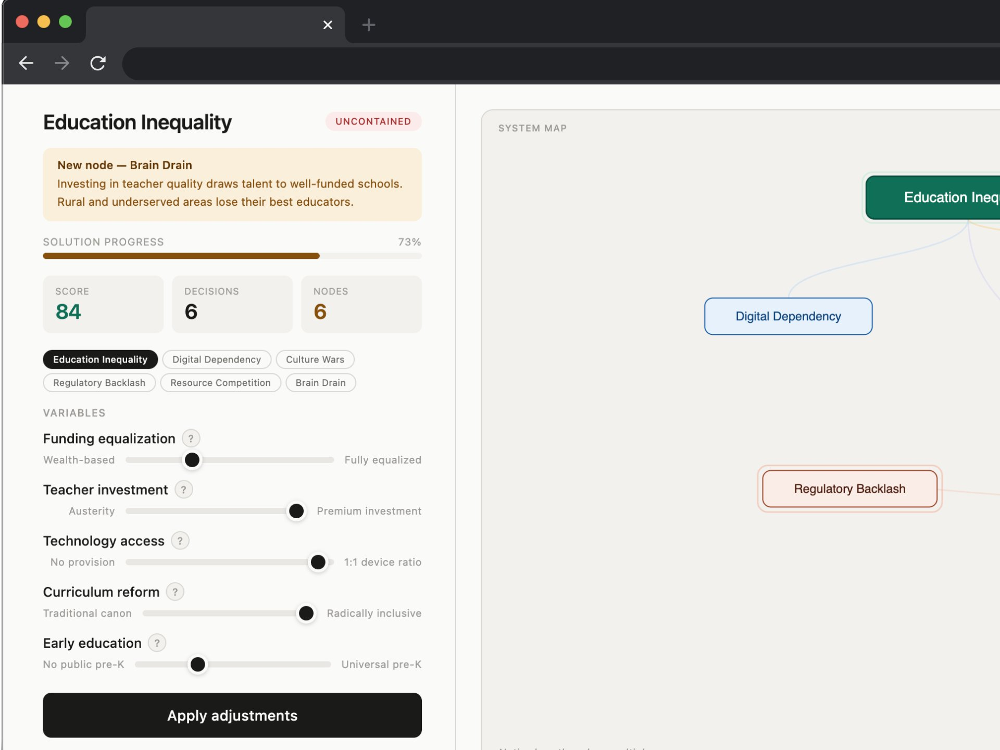
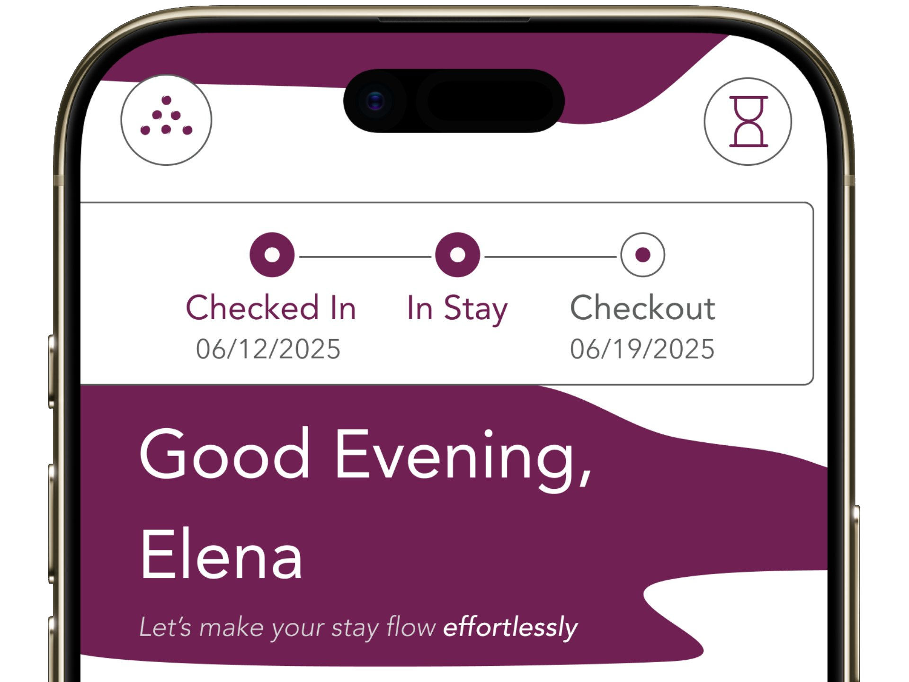
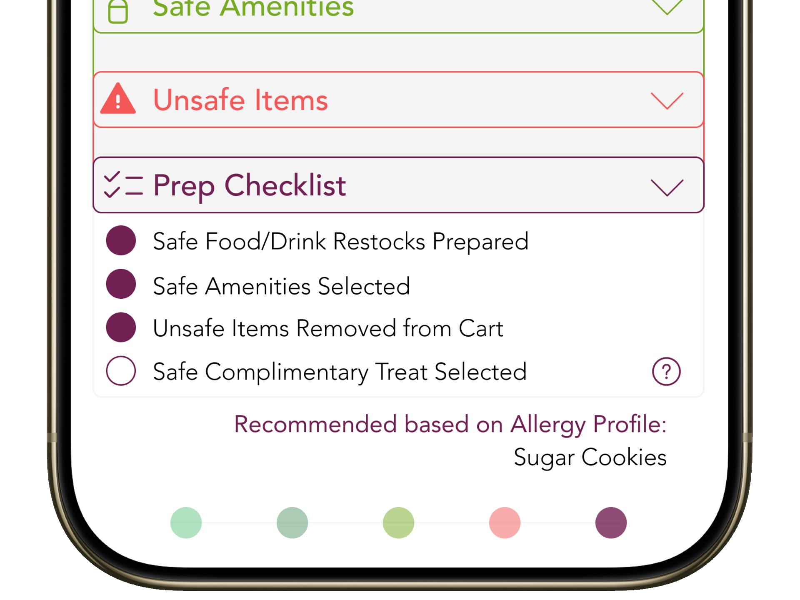
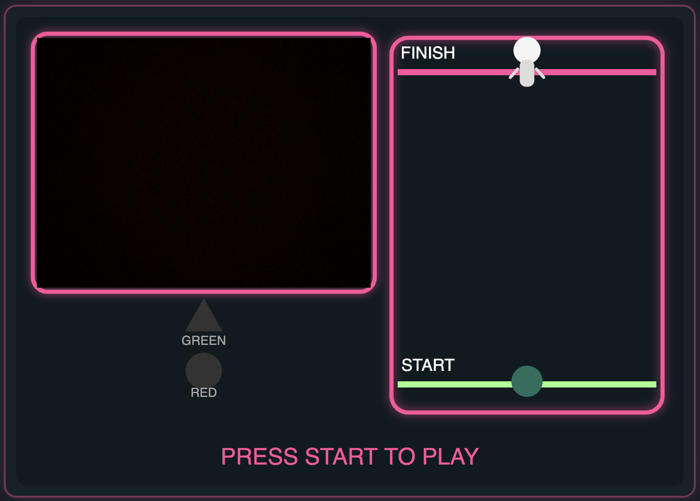

Speculative / Critical Design
JustFixIt
A playable critique of solutionism: you "solve" a social problem with a few toggles, then feel how hollow that is. Vibe-coded with Claude.
View case studyDesigning for what makes us human, as we build what comes next.
I work as a humanist designer, with cognitive science as method and AI as creative partner. My work aims to surface what users carry mentally — load, friction, recognition — and always stays conscious of who design serves.

A playable critique of solutionism: you "solve" a social problem with a few toggles, then feel how hollow that is. Vibe-coded with Claude.
View case study
A luxury resort's app looks like the brand but works like a hotel. A redesign where digital luxury earns its premium by clearing away.
View case study
A guest's severe allergy is logged at check-in but never reaches the person leaving chocolates on her pillow. A redesign that closes the last few feet.
View case study
A gesture-controlled prototype where Squid Game's red-light mechanic becomes a small experiment in surveillance and the freeze response. Built with Claude Code.
View case studyTwo-month Product Design internship at South Africa's second-largest online payments platform. Two projects across product UI and service design.
View internship work